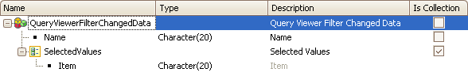

This event is triggered every time that values are removed from or added to the list of possible values for an attribute, whether it’s located in the rows, columns or pages area. Syntax&FilterChangedData.{ Name | SelectedValues } When the event is triggered, its parameters are queried in the "FilterChangedData" property. It returns an SDT with the following data:
QueryViewerFilterChangedData SDT Composition ExampleIn this example, every time that some of the filters in the ClientActive QueryElement are changed, only the selected ones will be counted. ClientActive can only have Y, N, and both values. The TOTAL option of the filter will not be considered.
Event QueryClients.FilterChanged
&Amount.SetEmpty()
if &FilterChangedData.Name = 'ClientActive'
for &TheClient in &LoadDataClientsSDT
if &TheClient.ClientActive = &FilterChangedData.SelectedValues.CurrentItem
&Amount += &TheClient.ClientAmount
endif
endfor
endif
EndEvent
Since the QueryClients.ChangedData event returns the collection of all the selected filters, the SDT path includes checking whether the client has the same value in ClientActive and in SelectedValues.CurrentItem. The &Col (Collection) and &Value variables are of character type, matching the item data type of the SelectedValues collection of the SDT (see image that shows how it is composed) to run it through with the For command. Scope
See Also
|
| Backlinks | |
| Filter Changed Data property | Category:QueryViewer control |